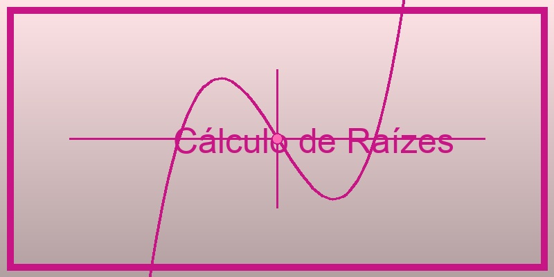
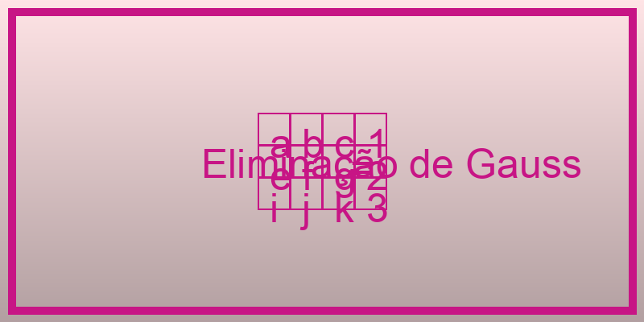

Cálculo de Raízes de Funções
Métodos de Falsa Posição e Newton-Raphson para encontrar raízes de equações não-lineares
Método da Falsa Posição (Regula-Falsi)
Método de Newton-Raphson
Visualização detalhada das iterações
Interface matemática interativa

Resolução de Sistemas Lineares
Método de Eliminação de Gauss com pivoteamento parcial para resolver sistemas de equações lineares
Eliminação Gaussiana com Pivoteamento
Solução passo-a-passo detalhada
Interface gráfica intuitiva
Verificação automática da solução